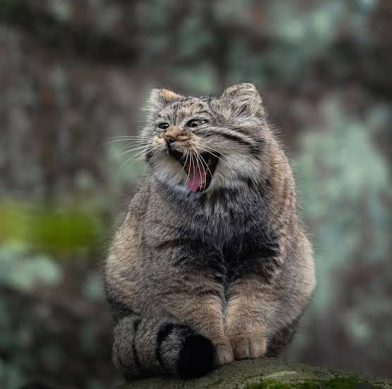

Lee Odom
Cell: 317-628-7264
Web: https://theuselessweb.site/ducksarethebest.com/
Email: mqddi3@gmail.com
Dependable and hardworking graduate who would be delighted to be a part of any team. Has had a 100% attendance rate at all past jobs and has volunteered at the local Mud Creek Theater for many years. Works well with people and stays focused on tasks.
- Education
-
Indiana University
Major: Communications
Minor: Creative Writing
- Skills
-
Office Skills
Organization, critical Thinking, group Collaboration, adaptability, communication, customer Service
Computer skills
Microsoft productivity software (Word, Excel, etc), Adobe Creative Suite, Windows
- Experience
-
Runner/Cafe WorkerPinheads, May 2021 - Feb 2022
- Ran food, handled cashier duties, and customer requests, while also preparing food.
- Participated in nightly closing activities and helped maintain the cleanliness of the kitchen.
Front Desk AssistantPet Palace, June 2022 – 2024
- Handled customer requests, check-ins/check-outs, phone calls, and daily cleaning tasks.
Assistant LibrarianHamilton East Public Library, June 2022 - present
- Handled customer requests, maintained shelf organization, created and maintained regular movie and book displays, answered phone calls, and registered patrons for library cards.
- Participated in both opening and closing activities.
- Hobbies
- Video creation, video editing, animation, illustration
- References
- Available on request
(Return to the original blog article.)